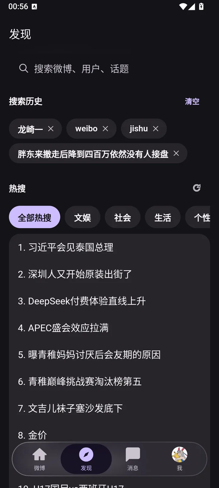

prism 设计语言
底栏是液态玻璃镜片，按下有 98.5% 的缩放回弹，进详情走跟手返回转场。整套来自 FlClash 的 prism_ui。
功能
从信息流到发布，19 个页面全部走通；下面这些是这一版最常用的部分。
底栏是液态玻璃镜片，按下有 98.5% 的缩放回弹，进详情走跟手返回转场。整套来自 FlClash 的 prism_ui。
关注、推荐、好友圈、特别关注、悄悄关注、本地关注、收藏、附近与自建分组；左右滑动切栏目，双击底栏回到最新。
转发块、九宫格、投票、编辑记录；评论按热度或时间排序，楼中楼可以整页展开，评论配图同样能点开、长按保存。
封面铺满状态栏底下，头像压住封面底边；下滑时封面裁短、头像缩小挪进顶栏，名字从大标题变成顶栏标题。
最多 9 张图、可见范围、话题联想、上传进度；写一半可以直接丢进草稿箱，下次接着改。
Cookie 写进应用私有目录，不经过任何中转服务；不发遥测，卸载应用即清空。所有请求直接发往微博接口。
截图
横向滚动查看。图片按显示尺寸下采样过，滚动不会卡。




安装
包是 arm64 的，覆盖现在绝大多数安卓手机。装之前请先卸载旧版本或确认签名一致。
在手机浏览器里打开
Releases 页面，
点 hobo-1.14.0-arm64.apk。
系统会拦一次，按提示给浏览器（或文件管理器）放开「安装未知应用」权限即可。
登录走网页授权，也可以粘贴 Cookie；不想登录就选纯本地模式，信息流照样能看。
gsid）接入超话签到，超话详情页头部支持一键签到并展示粉丝等级与连续签到天数，「我的超话」每条卡片右侧提供独立「签到 / 已签」按钮，分组栏新增「一键签到」（自动拉齐分页、带限流间隔逐条签到）；按账号与北京时间（UTC+8）按日记录，详情页与列表页实时双向同步。× 关闭键才删除对应记录。关于 / 微博(N) / 相册 / 精选 / 视频 统一升级为站内同款物理弹簧 HoboCapsule，与下方卡片左右 16dp 齐平，展开态去除上下硬边框，吸顶滚过内容时显现底部细分隔线。weibo.com/ajax/favorites/all_fav，20 条一页，下拉刷新 + 加载更多），点收藏 / 取消收藏会同时写回微博（ajax/statuses/createFavorites|destoryFavorites），缺 XSRF-TOKEN 时先补一次令牌再重试；纯本地模式与「设置 → 互动 → 收藏同步到微博」关闭时只写本机 favorites.json。containerid=230267 已被微博掏空（只回「这里还没有内容」），收藏列表改走 all_fav；业务错误是 HTTP 400 + {"ok":0,"message":"…"}，现在把服务端原话带出来而不是只显示 HTTP 400。href='/n/...' 属性与纯文本 //@昵称 兜底；uidForName 升级为「桌面精准查号 → /n/ 重定向 → 搜索兜底」三层容错解析并带内存缓存；补齐编辑记录、评论回复与通知摘要中的 @ 跳转。ImageViewerRoute，为正文、转发块、评论与相册分配防冲突唯一 Hero tag，支持线性直达路径、超椭圆圆角平滑变形、缩略图垫底零灰块闪烁以及单指垂直下拉跟手缩放关闭。Content-Type，并按网页版接口顺序尝试评论点赞。2.0x（已是 2.0x 时加速到 3.0x），顶部显示倍速提示胶囊，松手自动恢复原速。0，之前被当成有效游标，再点一次等于把第一页重贴一遍。pic 字段里，之前误取了 pics 里的视频占位地址。